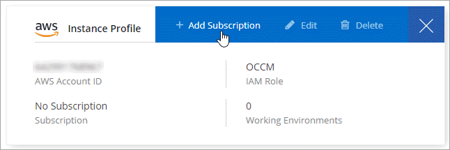

Deploy Cloud Data Sense
Contributors
 Download PDF of this page
Download PDF of this page
Complete a few steps to deploy Cloud Data Sense in your Cloud Manager workspace. You can deploy Data Sense in the cloud or on an on-premises system.
The on-prem installation may be a good option if you prefer to scan on-premises ONTAP working environments using a Data Sense instance that’s also located on premises — but this is not a requirement. The software functions exactly the same way regardless of which installation method you choose.
Quick start
Get started quickly by following these steps, or scroll down to the remaining sections for full details.
 Create a Connector
Create a Connector
If you don’t already have a Connector, create a Connector in Azure or AWS. See creating a Connector in AWS or creating a Connector in Azure.
You can also deploy the Connector on-premises on an existing Linux host in your network or in the cloud.
 Review prerequisites
Review prerequisites
Ensure that your environment can meet the prerequisites. This includes outbound internet access for the instance, connectivity between the Connector and Cloud Data Sense over port 80, and more. See the complete list.
-
When installed in the cloud, the default configuration requires 16 vCPUs for the Cloud Data Sense instance. See more details about the instance type.
-
When installed on premises, you need a Linux system that meets the following requirements.
 Deploy Cloud Data Sense
Deploy Cloud Data Sense
Launch the installation wizard to deploy the Cloud Data Sense instance.
You can deploy Cloud Data Sense in the cloud or in an on-premises location. The only difference you’ll notice in the UI is the words "On-Premises Deployment".

 Subscribe to the Cloud Data Sense service
Subscribe to the Cloud Data Sense service
The first 1 TB of data that Cloud Data Sense scans in Cloud Manager is free. A subscription to the AWS or Azure Marketplace is required to continue scanning data after that point.
Creating a Connector
If you don’t already have a Connector, create a Connector in Azure or AWS. See creating a Connector in AWS or creating a Connector in Azure. In most cases you will probably have a Connector set up before you attempt to activate Cloud Data Sense because most Cloud Manager features require a Connector, but there are cases where you’ll you need to set one up now.
There are some scenarios where you have to use a Connector that’s deployed in AWS or Azure:
-
When scanning data in Cloud Volumes ONTAP in AWS, Amazon FSx for ONTAP, or in AWS S3 buckets, you use a connector in AWS.
-
When scanning data in Cloud Volumes ONTAP in Azure or in Azure NetApp Files, you use a connector in Azure.
On-prem ONTAP systems, non-NetApp file shares, generic S3 Object storage, databases, and OneDrive folders can be scanned using either Connector.
Note that you can also deploy the Connector on-premises on an existing Linux host in your network or in the cloud. Some users planning to install Data Sense on-prem may also choose to install the Connector on-prem.
As you can see, there may be some situations where you need to use multiple Connectors.
| If you’re planning on scanning Azure NetApp Files volumes, you need to make sure you’re deploying in the same region as the volumes you wish to scan. |
Reviewing prerequisites
Review the following prerequisites to make sure that you have a supported configuration before you deploy Cloud Data Sense.
- Enable outbound internet access from Cloud Data Sense
-
Cloud Data Sense requires outbound internet access. If your virtual or physical network uses a proxy server for internet access, ensure that the Data Sense instance has outbound internet access to contact the following endpoints. When you deploy Data Sense in the cloud, it’s located in the same subnet as the Connector.
Review the appropriate table below depending on whether you are deploying Cloud Data Sense in AWS, Azure, or on-premises.
Required endpoints for AWS deployments:
Endpoints Purpose https://cloudmanager.cloud.netapp.com
Communication with the Cloud Manager service, which includes Cloud Central accounts.
https://netapp-cloud-account.auth0.com
https://auth0.comCommunication with NetApp Cloud Central for centralized user authentication.
https://cloud-compliance-support-netapp.s3.us-west-2.amazonaws.com
https://hub.docker.com
https://auth.docker.io
https://registry-1.docker.io
https://index.docker.io/
https://dseasb33srnrn.cloudfront.net/
https://production.cloudflare.docker.com/Provides access to software images, manifests, and templates.
https://kinesis.us-east-1.amazonaws.com
Enables NetApp to stream data from audit records.
https://cognito-idp.us-east-1.amazonaws.com
https://cognito-identity.us-east-1.amazonaws.com
https://user-feedback-store-prod.s3.us-west-2.amazonaws.com
https://customer-data-production.s3.us-west-2.amazonaws.comEnables Cloud Data Sense to access and download manifests and templates, and to send logs and metrics.
Required endpoints for Azure and On-Prem deployments:
Endpoints Purpose https://cloudmanager.cloud.netapp.com
Communication with the Cloud Manager service, which includes Cloud Central accounts.
https://netapp-cloud-account.auth0.com
https://auth0.comCommunication with NetApp Cloud Central for centralized user authentication.
https://support.compliance.cloudmanager.cloud.netapp.com/
https://hub.docker.com
https://auth.docker.io
https://registry-1.docker.io
https://index.docker.io/
https://dseasb33srnrn.cloudfront.net/
https://production.cloudflare.docker.com/Provides access to software images, manifests, templates, and to send logs and metrics.
https://support.compliance.cloudmanager.cloud.netapp.com/
Enables NetApp to stream data from audit records.
On-premises installs only:
https://github.com/docker
https://download.docker.com
https://rhui3.us-west-2.aws.ce.redhat.com
https://github-production-release-asset-2e65be.s3.amazonaws.com
https://pypi.org
https://pypi.python.org
https://files.pythonhosted.org
http://mirror.centos.org
http://mirrorlist.centos.org
http://mirror.centos.org/centos/7/extras/x86_64/Packages/container-selinux-2.107-3.el7.noarch.rpmProvides prerequisite packages for installation.
- Ensure that Cloud Manager has the required permissions
-
Ensure that Cloud Manager has permissions to deploy resources and create security groups for the Cloud Data Sense instance. You can find the latest Cloud Manager permissions in the policies provided by NetApp.
- Check your vCPU limits
-
When installed in the cloud, ensure that your cloud provider’s vCPU limit allows for the deployment of an instance with 16 cores. You’ll need to verify the vCPU limit for the relevant instance family in the region where Cloud Manager is running.
In AWS, the instance family is On-Demand Standard instances. In Azure, the instance family is Standard Dsv3 Family.
See the following links for more details on vCPU limits:
-
Azure documentation: Virtual machine vCPU quotas
Note that you can deploy Data Sense on a system with fewer CPUs and less RAM, but there are limitations when using these systems. See Using a smaller instance type for details.
- Ensure that Cloud Manager can access Cloud Data Sense
-
Ensure connectivity between the Connector and the Cloud Data Sense instance. The security group for the Connector must allow inbound and outbound traffic over port 80 to and from the Data Sense instance.
This connection enables deployment of the Data Sense instance and enables you to view information in the Compliance and Governance tabs.
- Ensure that you can keep Cloud Data Sense running
-
The Cloud Data Sense instance needs to stay on to continuously scan your data.
- Ensure web browser connectivity to Cloud Data Sense
-
After Cloud Data Sense is enabled, ensure that users access the Cloud Manager interface from a host that has a connection to the Data Sense instance.
The Data Sense instance uses a private IP address to ensure that the indexed data isn’t accessible to the internet. As a result, the web browser that you use to access Cloud Manager must have a connection to that private IP address. That connection can come from a direct connection to AWS or Azure (for example, a VPN), or from a host that’s inside the same network as the Data Sense instance.
Deploying the Cloud Data Sense instance in the cloud
Deploying an instance of Cloud Data Sense in the cloud is the most common deployment model. But you have the option to deploy the Compliance software on a Linux host in your network or in the cloud.
The Data Sense software functions exactly the same way regardless of which installation method you choose.
-
In Cloud Manager, click Data Sense.
-
Click Activate Cloud Data Sense.

-
Click Activate Data Sense to start the cloud deployment wizard.

-
The wizard displays progress as it goes through the deployment steps. It will stop and ask for input if it runs into any issues.

-
When the instance is deployed, click Continue to configuration to go to the Configuration page.
Cloud Manager deploys the Cloud Data Sense instance in your cloud provider.
From the Configuration page you can select the data sources that you want to scan.
You can also subscribe to the Cloud Data Sense service at this time. You will not be charged until the amount of data exceeds 1 TB.
Deploying the Cloud Data Sense instance on premises
You can download and install the Data Sense software on a Linux host in your network if you do not want to deploy it in the cloud.
The Data Sense software functions exactly the same way regardless of which installation method you choose.
For typical configurations you’ll install the software on a single host system. For very large configurations where you’ll be scanning petabytes of data, you can include additional hosts as scanner nodes to provide additional processing power.
| Cloud Data Sense is currently unable to scan S3 buckets and Azure NetApp Files when the software is installed on premises. In these cases you’ll need to deploy a separate Connector and instance of Data Sense in the cloud and switch between Connectors for your different data sources. |
Host requirements
-
Operating system: Red Hat Enterprise Linux or CentOS version 8.0 or 8.1
-
Version 7.8 can be used, but the Linux kernel version must be 4.14 or greater
-
The OS must be capable of installing the docker engine (for example, disable the firewalld service if needed)
-
-
RAM: 64 GB (swap memory must be disabled on the host)
-
CPU: 16 cores
-
Disk: 500 GB SSD
Note that you can deploy Data Sense on a system with fewer CPUs and less RAM, but there are limitations when using these systems. See Using a smaller instance type for details.
-
A Red Hat Enterprise Linux system must be registered with Red Hat Subscription Management. If it is not registered, the system cannot access repositories to update required 3rd party software during installation.
-
Make sure port 8080 is open so you can see the installation progress in Cloud Manager.
-
Root privileges are required to install Cloud Data Sense.
See Reviewing prerequisites for the full list of requirements and endpoints that Cloud Data Sense must be able to reach over the internet.
Single-host installation for typical configurations
Follow these steps when installing Data Sense software on a single on-premises host.
-
Download the Cloud Data Sense software from the NetApp Support Site.
-
Copy the installer file to the Linux host you plan to use (using
scpor some other method). -
In Cloud Manager, click Data Sense.
-
Click Activate Cloud Data Sense.
-
Click Activate Data Sense to start the on-prem deployment wizard.

-
In the Deploy Cloud Data Sense On Premises dialog, copy the provided command and paste it in a text file so you can use it later. For example:
sudo ./install.sh -a 12345 -c 27AG75 -t 2198qq
-
Unzip the installer file on the host machine:
tar -xzf cc_onprem_installer.tar.gz -
When prompted by the installer, you can enter the required values in a series of prompts, or you can enter the complete command in the first prompt:
Enter parameters as prompted: Enter the full command: -
Paste the information you copied from step 6:
sudo ./install.sh -a <account_id> -c <agent_id> -t <token> -
Enter the IP address or host name of the Data Sense host machine so it can be accessed by the Connector instance.
-
Enter the IP address or host name of the Cloud Manager Connector host machine so it can be accessed by the Data Sense instance.
-
Enter proxy details as prompted. If your Cloud Manager already uses a proxy, there is no need to enter this information again here since Data Sense will automatically use the proxy used by Cloud Manager.
Alternatively, you can create the whole command in advance and enter it in the first prompt:
sudo ./install.sh -a <account_id> -c <agent_id> -t <token> --host <ds_host> --cm-host <cm_host> --proxy-host <proxy_host> --proxy-port <proxy_port> --proxy-scheme <proxy_scheme> --proxy-user <proxy_user> --proxy-password <proxy_password>Variable values:
-
account_id = NetApp Account ID
-
agent_id = Connector ID
-
token = jwt user token
-
ds_host = IP address or host name of the Data Sense Linux system.
-
cm_host = IP address or host name of the Cloud Manager Connector system.
-
proxy_host = IP or host name of the proxy server if the host is behind a proxy server.
-
proxy_port = Port to connect to the proxy server (default 80).
-
proxy_scheme = Connection scheme: https or http (default http).
-
proxy_user = Authenticated user to connect to the proxy server, if basic authentication is required.
-
proxy_password = Password for the user name that you specified.
-
The Cloud Data Sense installer installs packages, installs docker, registers the installation, and installs Data Sense. Installation can take 10 to 20 minutes.
If there is connectivity over port 8080 between the host machine and the Connector instance, you will see the installation progress in the Data Sense tab in Cloud Manager.
From the Configuration page you can select the data sources that you want to scan.
You can also subscribe to the Cloud Data Sense service at this time. You will not be charged until the amount of data exceeds 1 TB. A subscription to either the AWS or Azure Marketplace can be used when you have deployed Data Sense on an on-premises system.
Multi-host installation for large configurations
Follow these steps when installing Data Sense software on multiple on-premises hosts.
When using multiple host systems, the primary system is called the Manager node and the additional systems that provide extra processing power are call Scanner nodes.
-
See Reviewing prerequisites for the full list of requirements and endpoints that Cloud Data Sense must be able to reach over the internet.
-
The host requirements are the same for Scanner nodes as they are for Manager nodes. See Host requirements for details.
-
You must have the IP addresses of the scanner node hosts that you plan to use.
-
The following ports and protocols must be enabled on all hosts:
Port Protocols Description 2377
TCP
Cluster management communications
7946
TCP, UDP
Inter-node communication
4789
UDP
Overlay network traffic
50
ESP
Encrypted IPsec overlay network (ESP) traffic
111
TCP, UDP
NFS Server for sharing files between the hosts (needed from each scanner node to manager node)
2049
TCP, UDP
NFS Server for sharing files between the hosts (needed from each scanner node to manager node)
-
Follow steps 1 through 7 from the Single-host installation on the manager node.
-
As shown in step 8, when prompted by the installer, you can enter the required values in a series of prompts, or you can enter the complete command in the first prompt.
In addition to the variables available for a single-host installation, a new option -n <node_ip> is used to specify the IP addresses of the scanner nodes. Multiple node IPs are separated by a comma.
For example, this command adds 3 scanner nodes:
sudo ./install.sh -a <account_id> -c <agent_id> -t <token> --host <ds_host> --cm-host <cm_host> -n <node_ip1>,<node_ip2>,<node_ip3> --proxy-host <proxy_host> --proxy-port <proxy_port> --proxy-scheme <proxy_scheme> --proxy-user <proxy_user> --proxy-password <proxy_password> -
Before the manager node installation completes, a dialog displays the installation command needed for the scanner nodes. Copy the command and save it in a text file. For example:
sudo ./node_install.sh -m 10.11.12.13 -t ABCDEF-1-3u69m1-1s35212
-
On each scanner node host:
-
Copy the Data Sense installer file (cc_onprem_installer.tar.gz) to the host machine (using
scpor some other method). -
Unzip the installer file.
-
Paste and execute the command that you copied in step 3.
When the installation finishes on all scanner nodes and they have been joined to the manager node, the manager node installation finishes as well.
-
The Cloud Data Sense installer finishes installing packages, docker, and registers the installation. Installation can take 10 to 20 minutes.
From the Configuration page you can select the data sources that you want to scan.
You can also subscribe to the Cloud Data Sense service at this time. You will not be charged until the amount of data exceeds 1 TB. A subscription to either the AWS or Azure Marketplace can be used when you have deployed Data Sense on an on-premises system.
Subscribing to the Cloud Data Sense service
The first 1 TB of data that Cloud Data Sense scans in a Cloud Manager workspace is free. A subscription to the AWS or Azure Marketplace is required to continue scanning data after that point.
You can subscribe at any time and you will not be charged until the amount of data exceeds 1 TB. You can always see the total amount of data that is being scanned from the Data Sense Dashboard. And the Subscribe Now button makes it easy to subscribe when you are ready.

Note: If you are prompted by Cloud Data Sense to subscribe, but you already have an Azure subscription, you’re probably using the old Cloud Manager subscription and you need to change to the new NetApp Cloud Manager subscription. See Changing to the new NetApp Cloud Manager plan in Azure for details.
These steps must be completed by a user who has the Account Admin role.
-
In the upper right of the Cloud Manager console, click the Settings icon, and select Credentials.

-
Find the credentials for the AWS Instance Profile or Azure Managed Service Identity.
The subscription must be added to the Instance Profile or Managed Service Identity. Charging won’t work otherwise.
If you already have a subscription, then you’re all set—there’s nothing else that you need to do.

-
If you don’t have a subscription yet, hover over the credentials and click the action menu.
-
Click Add Subscription.

-
Click Add Subscription, click Continue, and follow the steps.
The following video shows how to associate a Marketplace subscription to an AWS subscription:
The following video shows how to associate a Marketplace subscription to an Azure subscription:
Changing to the new Cloud Manager plan in Azure
Cloud Data Sense (Cloud Compliance) was added to the Azure Marketplace subscription named NetApp Cloud Manager as of October 2020. If you already have the original Azure Cloud Manager subscription it will not allow you to use Cloud Data Sense.
You need to follow these steps to change to the new NetApp Cloud Manager subscription before you can start using Cloud Data Sense.
| If your existing Subscription was issued with a special private offer, you need to contact NetApp so that we can issue a new special private offer with Data Sense included. |
-
In the upper right of the Cloud Manager console, click the Settings icon, and select Credentials.
-
Find the credentials for the Azure Managed Service Identity that you want to change the subscription for and hover over the credentials and click Associate Subscription.
The details for your current Marketplace Subscription are displayed.
-
Log in to the Azure portal and select Software as a Service (SaaS).
-
Select the subscription for which you want to change the plan and click Change Plan.

-
In the Change Plan page, select the NetApp Cloud Manager plan and click the Change Plan button.
-
Return to Cloud Manager, select the subscription, and hover over the “i” above subscription in the Credentials card to verify your subscription has changed.
 Edit on GitHub
Edit on GitHub